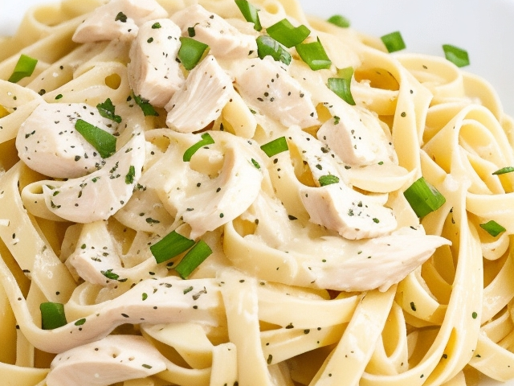

Chicken Fettuccine Alfredo Recipe

This classic Italian dish is easy to make and perfect for a cozy dinner at home. This recipe serves four people.
Ingredients
- 1 pound fettuccine pasta
- 2 tablespoons butter
- 1 pound boneless, skinless chicken breasts, cut into bite-sized pieces
- 2 cloves garlic, minced
- 1 cup heavy cream
- 1 cup grated Parmesan cheese
- Salt and pepper to taste
- Chopped parsley for garnish (optional)
Instructions
- Cook the fettuccine pasta in a large pot of salted boiling water until al dente, according to package instructions. Drain and set aside.
- In a large skillet, melt the butter over medium-high heat.
- Add the chicken pieces and cook for 5-7 minutes, stirring occasionally, until browned on all sides and cooked through.
- Add the minced garlic and cook for an additional 1-2 minutes, until fragrant.
- Pour in the heavy cream and stir until heated through.
- Add the Parmesan cheese and stir until it is fully melted and the sauce is smooth.
- Season with salt and pepper to taste.
- Add the cooked fettuccine to the skillet and toss to coat the pasta with the sauce.
- Serve hot, garnished with chopped parsley if desired.
Nutritional Information
| Nutrient | Amount Per Serving |
|---|---|
| Calories | 675 kcal |
| Fat | 33 g |
| Saturated Fat | 19g |
| Cholesterol | 186 mg |
| Sodium | 665 mg |
| Carbohydrates | 49 g |
| Fiber | 2 g |
| Sugar | 2 g |
| Protein | 44 g |
Macronutrients Breakdown
| Macronutrients | Grams |
|---|---|
| Carbs | 49 |
| Fat | 33 |
| Protein | 44 |
Note: For a lighter version of this recipe, you can use half-and-half or whole milk instead of heavy cream. You can also use a combination of Parmesan and Romano cheeses for a more complex flavor.